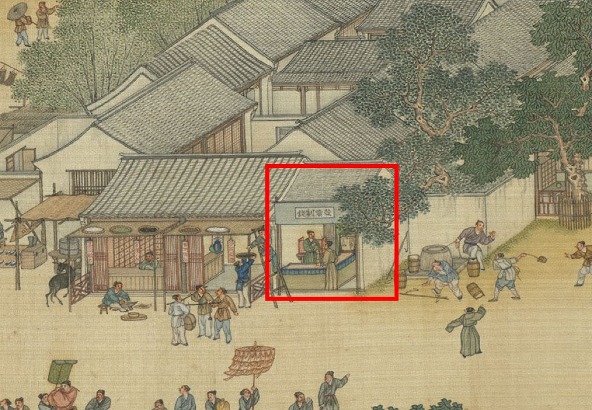
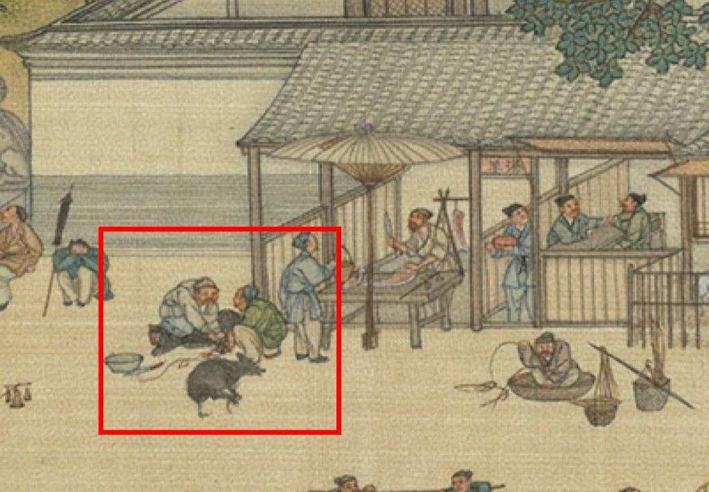
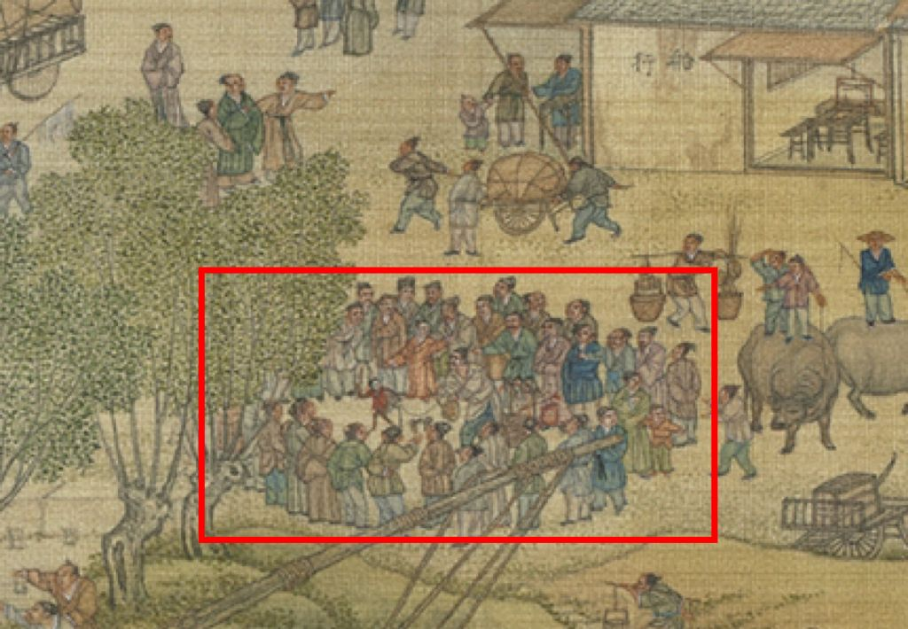

QINGMING SHANGHE TU
AN INTERACTIVE SOUNDSCAPE
HEAR THE SCROLL PAINTING
In this project, we aimed to enrich the art appreciation of the Qingming Shanghe Tu (chinese: 清明上河图(圖), english: Along the River During the Qingming Festival) painting through multimodal perception by providing a sonic dimension to the visual illustration.The design was evaluated with user tests in two groups, i.e.,with and without sound interactions.The evaluation shows how the group with sound interactions could more accurately identify the depictions on the painting and spent more time in exploring the art piece.In addition, two themes were identified from the qualitative questionnaires in the evaluation: a positive reception of the work and that sound enhances experience and interaction. We conclude that the project enhanced the emotional and aesthetic experience as well as improved the understanding of the artwork. By incorporating concepts from sound interaction in artwork, our research suggest a broader application for other art pieces, where sound interaction can be another way of understanding the interactive systems used in art pieces. Below is an outline of the design, process, evaluation and materials to showcase the project.
Design
Due to the scroll painting having a very long horizontal dimension, the painting is interacted with in sections – similarly to how someone would read a scroll painting section wise. The user meets the very right end of the painting and is invited to interact with the touch screen, by scrolling horizontally to the left or using two fingers to zoom in or out in the painting. Certain parts of the painting are designed with a soundscape and to guide the user to these sections the parts in-between provide background music. This, in a sense, creates a rhythm between the music and soundscape parts where the music appears and ceases throughout the interaction. In the sections with the soundscapes, the user can hear the sounds from different levels – a zoomed out perspective creates an overall soundscape, but as users zoom in from an overview to specific details, the sounds transition from an overhead urban soundscape to distinct street noises. The volume is also related to how close the user is to a detail, which continuously changes the soundscape as the user explore the painting.
Below is a website version of the sonified scroll painting. Depending on your browser and networking settings, it may take some time to load and may affect the website applications functionalities.
DESIGNING PROCESS
Since there are many versions of the Qingming scroll, choosing which version of the painting to use in the design of
the soundscape was one of the main design choices in the early designing stages. There were a couple of factors which
played a role in the selection. We needed a digital version, available to the public and with high resolution to support in-detail
zooming. Based on this, we develop two early-stage prototypes – one of the original version from Song dynasty, and the
other from the Qing dynasty. This project ended up choosing the version from the Qing dynasty, due to the feedback
we received after presenting the digital prototypes for a potential audience.
To create the digital Qingming scroll, we utilized the game engine Unity for the construction and to add
functionalities like touch-controlled zoom and finger scrolling. Adobe Audition was used for arranging, altering, and
editing sounds with audio sourced from digital libraries or produced by ourselves.
We used the three-dimensional
mode to be able to incorporate the three-dimensional soundscape. This project makes use of the game engine’s
three-dimensional
mode to create a
two-dimensional picture viewing system that
allows for the expansion and combination of
three-dimensional sounds. The sound system’s
production is divided into two parts:
background music and sound effects. This
project also divided the image into three categories,
rural, town, and palace, and customized
different background music to match the
various contents. The music function as a transition element
between the sections having a soundscape. When the user navigates to a
different area of painting, the collider is
triggered, changing the current sound. In terms
of sound effects, this project creates sound
effects that correspond to different story points
on the image. The size of the sound amplitude
is affected by the camera's distance from the
vertical direction of the image, and the
parameters of the sound phase are affected by
the camera's distance from the horizontal direction of the image. In this way, the sound
system can three-dimensional
be
used
space
to
and
simulate
generate
reasonable sound changes when scrolling and
zooming in and out of images to enhance the
interactive experience. The sound changes dynamically as the users are navigating the painting. In
total, seventy-four sound points were spread out in the painting to create an urban soundscape that aligns with the
painting’s narrative.
EVALUATION
EVALUATION METHOD
The evaluation consisted of user tests with 14 participants divided into two groups: one with sound and one without.
The first group experienced the final design with sound interaction features, while the second group, the control group,
experienced it without sound. Both groups received the same instructions and completed the same tests, differing only
in the presence of sound. The participants were between 18-30 years old and of a range of cultural backgrounds– three
of the participants were of Chinese background to allow for a comparison of cultural experiences. The sound group
included eight participants, and the no-sound group included six. The tests utilized a Lenovo Yoga 7i screen touch
computer, enabling participants to scroll and zoom on the painting with their fingers. Sound was provided through
MARSHALLMajor IV Wireless On-Ear Headphones. To ensure consistency, the participants used the same display
and headphones, with a constant volume setting and control deactivated during the application run. The volume
was checked between the participants to maintain consistency. The evaluation was overseen by an observer and an
instructor for each test. The participants were instructed to familiarize themselves with the digital scroll painting and
were informed that there was no time limit for their exploration. However, the time duration was still documented, but
the participants could take their time in the exploration. Following this, the participants completed a questionnaire on a
separate electronic tablet about their experience of the interactive painting. Next, the participants were shown three
depictions of specific element from the painting (see Fig. 1) and were asked to provide their interpretations. Each of
these elements were associated with a representative sound in the sonified version of the digital scroll. The depicted
elements were a bank, people butchering a pig, and a street performance with a monkey. Finally, the participants
engaged in a timed task, which required them to locate a person falling to the ground somewhere in the scroll. The
time duration to identify this painting detail in this task was recorded. In the sonified version, the painting detail in the
tasks were accompanied with sound, unlike the group without sound.
The collected data was both quantitative and qualitative. The quantitative data, i.e., the collected time duration for the
tasks, was analyzed through descriptive statistics and inferential analysis. The interpretation tasks were analyzed by proximity to the correct answer.
The qualitative data collected in the evaluation was analyzed thematically through coding and by identifying themes.
EVALUATION RESULT
From the analysis we found that participants of the group who had the painting with sounds spent on average 1 minute
and 47 seconds longer exploring the painting, compared to the group without sound. However, the inferential analysis
could not indicate that sound would have a significant effect on the time spent for exploration. We could, however, see
that there was a trend in a longer time in the exploration of the painting when sound was present.
In the interpretation tasks, the participants of the sound group consistently showed higher accuracy compared
to those in the no-sound group. In the first task (Fig. 1a), 87,5% of the sound group answered the questions using
keywords like bank, money, coins and such, compared to the no-sound group with a rate of 16.67%. All participants in
the sound-group interpreted Fig. 1b as butchering of an animal, whereas to the 33.33% in the no-sound group. The street
performance scene (Fig. 1c), 75% in the sound group used words like "monkey" or "circus", wherears only 16.67% mentioned
relevant descriptions in the no-sound group. These findings indicate how there is an advantage of sound interaction in
promoting a certain understanding and interpretation of certain elements.
The results from the task of identifying a falling person did not show any big difference between the two group.
However, some participants expressed how the sound effects helped them to locate the person faster.
From the qualitative analysis two themes were identified in the sound group – positive reception and sound enhances
experience and interaction – and one theme in the group without sound – positive experience of visuals (see Table 1).
Even though some codes used in the analysis may resemble similarities, it is important to understand the context in
which they were expressed in – the group which experience the digital scroll without any sound were more directed
towards the visual experience, while the group with sound mentioned both dimensions.
Figure 1 (a-c):
| a | b | c |
Table 1
| GROUP | THEME | CODE |
|---|---|---|
| Sound | Positive reception | - Positive affective response (10:7) - Music and visual elements are congruent and pleasant (5:4) |
| Sound enhances experience and interaction | - Enhanced experience (7:5) - Sound properties elevate the experience (6:4) - Sound promotes exploration (2:2) |
|
| No sound | Positive experience of visuals | - Positive general experience (4:3) - Positive response towards visuals (2:2) - Visuals arouse curiosity (2:2) |